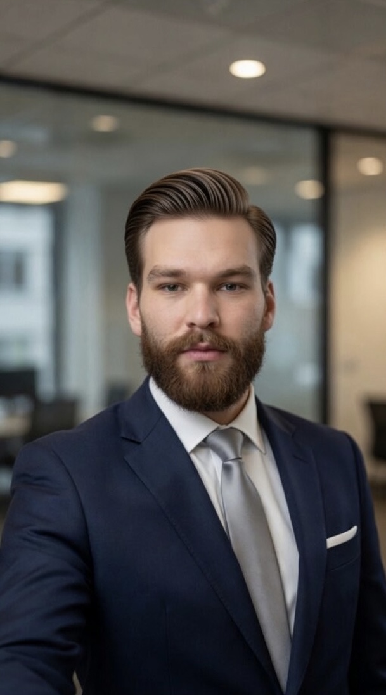

Finansujemy praktyczne programy chroniące ekosystemy morskie. Każdy program zaopatrzenia
realizowany przez OrcaTrade Group może przyczynić się do ochrony orków, sprzątania linii brzegowych
i edukacji morskiej — zamieniając handel w siłę napędową długotrwałego dobra środowiskowego.
Finansujemy praktyczne programy — nie tylko obietnice.
Co wspieramy
Partnerstwa na rzecz ochrony orków i przywracania siedlisk
Programy sprzątania linii brzegowych i oceanów prowadzone przez społeczności
Inicjatywy edukacyjne dotyczące ochrony oceanów
Transparentne darowizny z rocznymi aktualizacjami wyników
Jak klienci mogą dołączyć
Klienci mogą przystąpić do programów zaopatrzenia wspieranych przez fundację, w których określona część
przychodów z projektu trafia do partnerów ds. ochrony przyrody. Tworzymy również niestandardowe inicjatywy
wpływu dla długoterminowych współprac z markami.
Skoncentrowane inicjatywy, w których wkłady fundacji są wdrażane w działanie.
Program 01
Ochrona siedlisk orków
Współpraca z biologami morskimi i pozarządowymi organizacjami ochrony przyrody w celu ochrony kluczowych
siedlisk orków wzdłuż głównych szlaków handlowych. Finansowanie monitoringu akustycznego,
programów redukcji prędkości statków i mapowania siedlisk we współpracy z organami regionalnymi.
Program 02
Sieć sprzątania oceanów
Wspieranie prowadzonych przez społeczności operacji sprzątania linii brzegowych i oceanów
w regionach Azji i Pacyfiku oraz europejskich stref przybrzeżnych. Każdy program jest śledzony
z danymi o wpływie przed i po, a jego finansowanie jest współfinansowane przez wkłady klientów
powiązane z ich wolumenami zaopatrzenia.
Program 03
Edukacja morska i rzecznictwo
Programy edukacyjne dla społeczności przybrzeżnych, szkół i interesariuszy branżowych
na temat związku między globalnym handlem a zdrowiem oceanów. Budowanie następnego pokolenia
orędowników, którzy rozumieją, że handel i ochrona przyrody nie są przeciwieństwami.
Kierownictwo Fundacji
Osoba stojąca za Fundacją.

Sir Timotheus Carrington
Lider OrcaTrade Foundation
Sir Timotheus Carrington wnosi do OrcaTrade Foundation coś coraz rzadszego we współczesnej filantropii: autentycznie długoterminową perspektywę. Jako potomek rodu Aristorcacry — rodziny, której wielowiekowa opieka obejmuje europejskie dziedzictwo morskie i przyrodnicze — traktuje on ochronę przyrody nie jako sprawę do propagowania, lecz jako zobowiązanie, które należy honorować.
Jego przywództwo w Fundacji cechuje cierpliwość i rygoryzm. Podczas gdy większość inicjatyw ochrony środowiska mierzy sukces kampaniami, Sir Timotheus mierzy go ekosystemami — powolną odbudową siedlisk orki, stopniowym przywracaniem szlaków żeglugowych, skumulowanym efektem edukacji docierającej do nadmorskich społeczności rok po roku. Nie interesuje go filantropia nastawiona na rozgłos. Interesują go wyniki, które przeżyją swoich fundatorów.
Pod jego kierownictwem OrcaTrade Foundation działa z taką samą dyscypliną, jaką stosuje się w każdym programie zaopatrzenia: jasno określone cele, przejrzyste raportowanie i partnerzy rozliczani z mierzalnych standardów. Środki na ochronę środowiska są przydzielane w ramach trzech ustrukturyzowanych programów — ochrony siedlisk orki, morskich operacji sprzątania i edukacji oceanicznej — każdy bezpośrednio powiązany z działalnością handlową OrcaTrade, tak że każda ułatwiona dostawa przyczynia się, w określony i możliwy do prześledzenia sposób, do zdrowia oceanów, które przecina.
Sir Timotheus utrzymuje relacje doradcze z kilkoma europejskimi instytucjami biologii morskiej i współtworzył ramy oceny wpływu z organizacjami pozarządowymi działającymi na obszarze Azji i Pacyfiku oraz Północnego Atlantyku. Mieszka między Londynem a polskim wybrzeżem.
Ochrona orkówPartnerstwa fundacjiProgramy wpływu na środowisko morskie
Aktywna
Porozmawiaj z nami o programach fundacji.
Niezależnie od tego, czy są Państwo klientem chcącym dodać wymiar ochrony przyrody do zaopatrzenia,
czy organizacją zainteresowaną partnerstwem — chętnie usłyszymy od Państwa.